Our school in pictures
Each image includes a caption describing the people and activities shown.
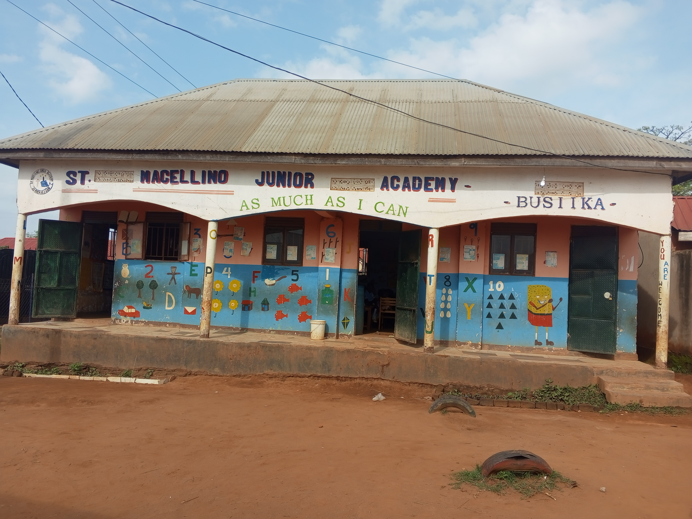
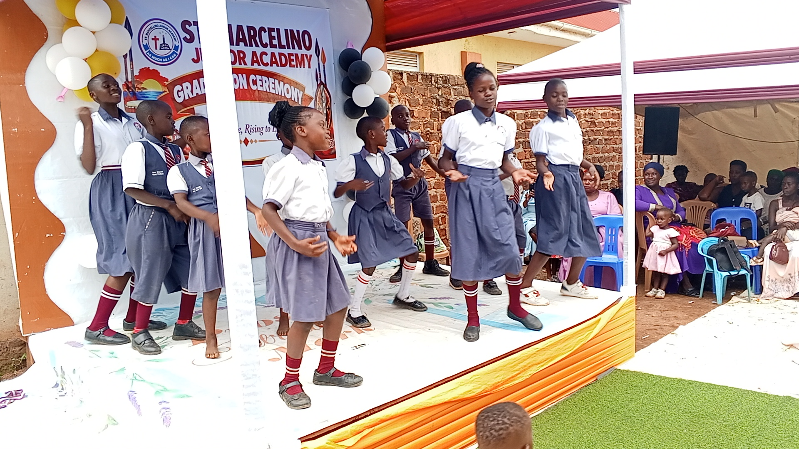

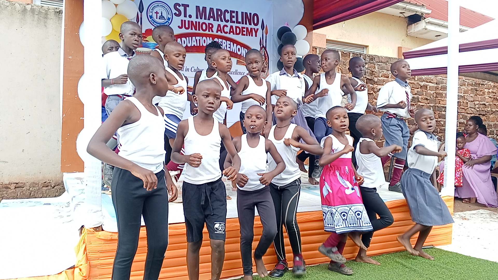
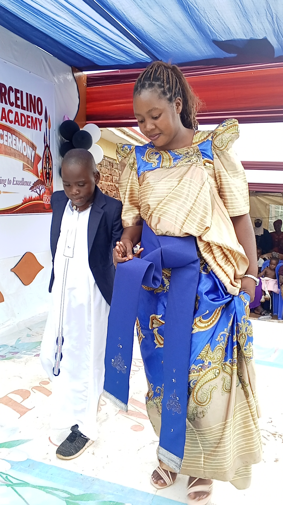
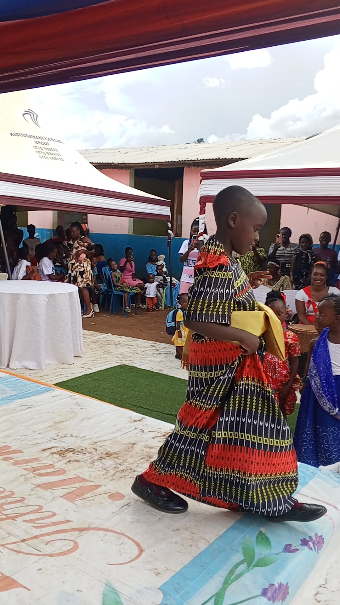
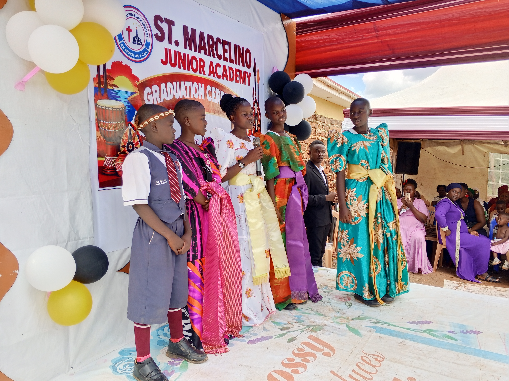
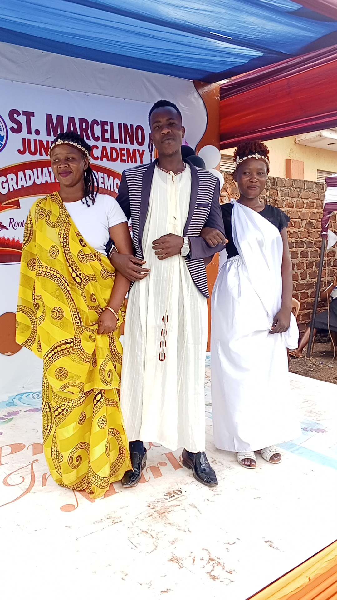
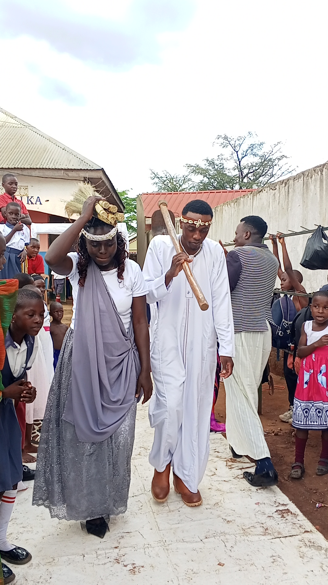

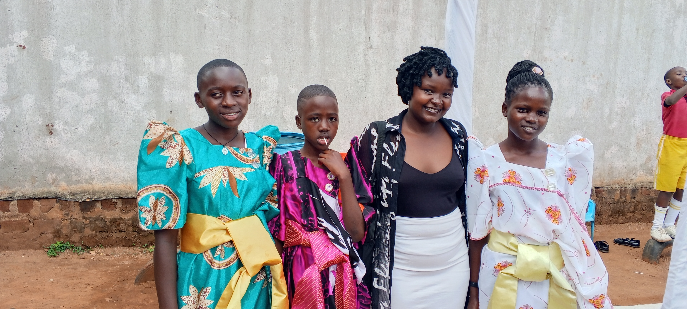

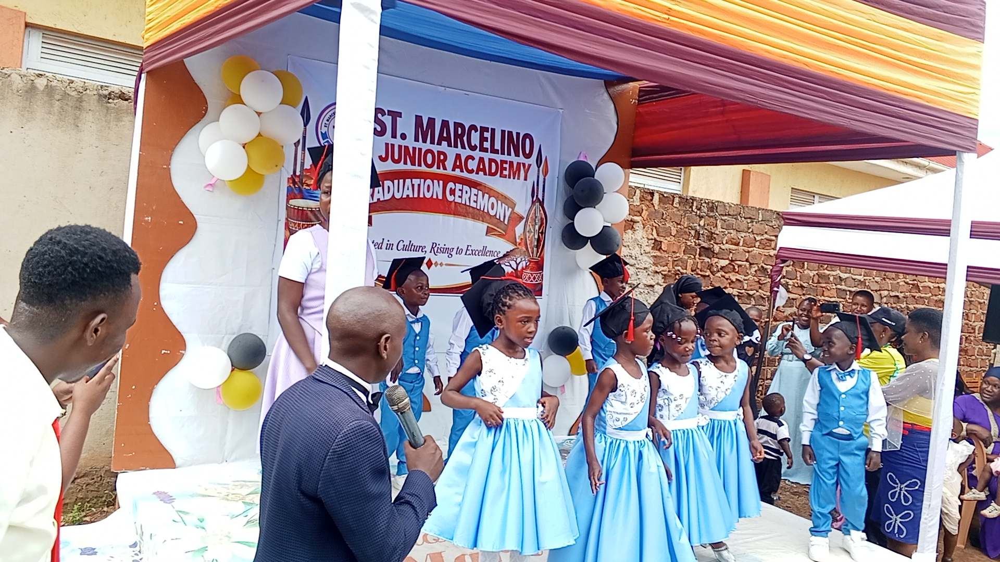


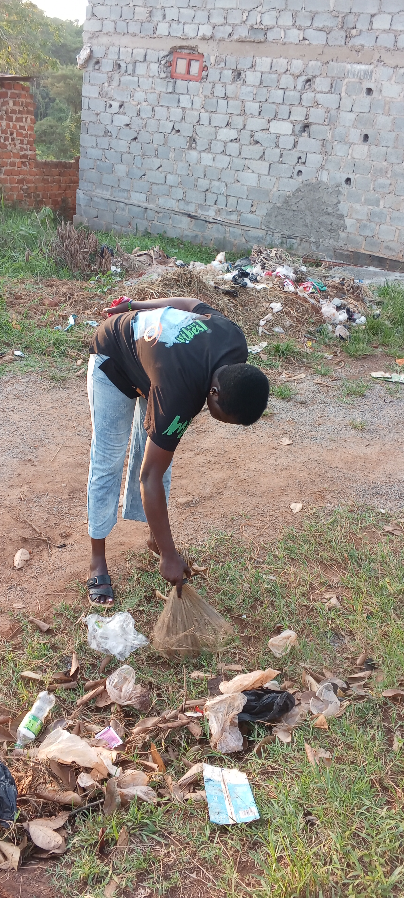
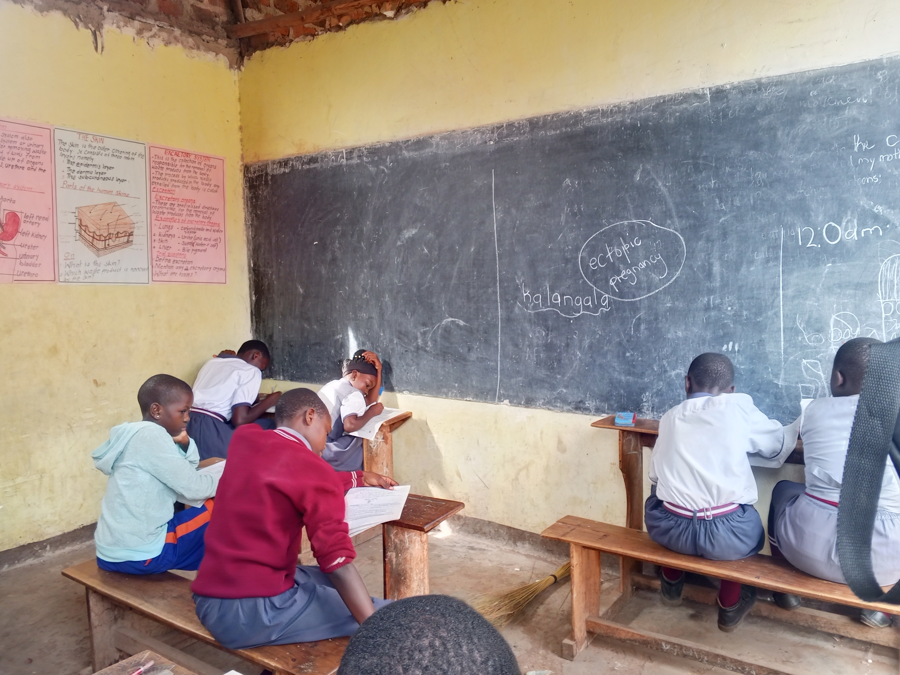

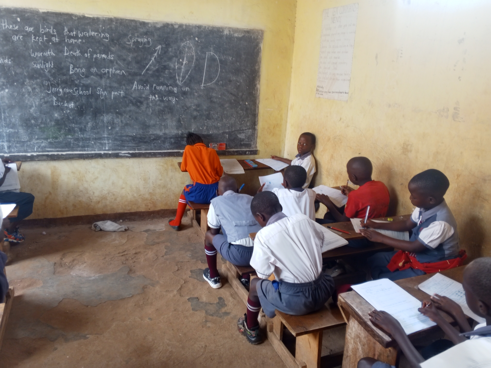


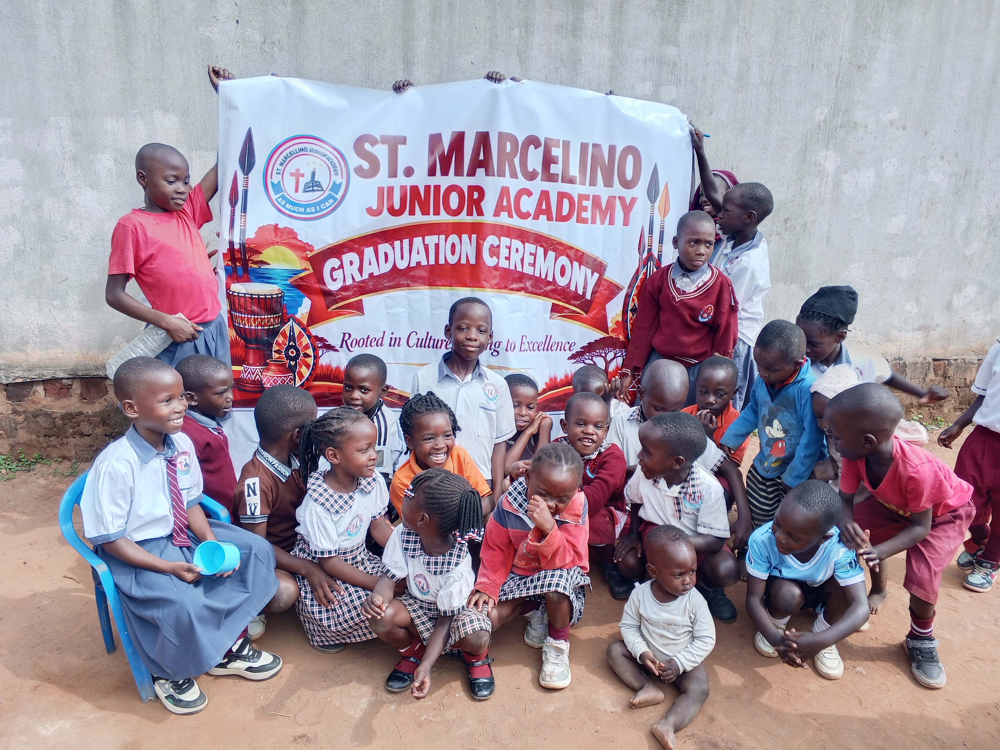

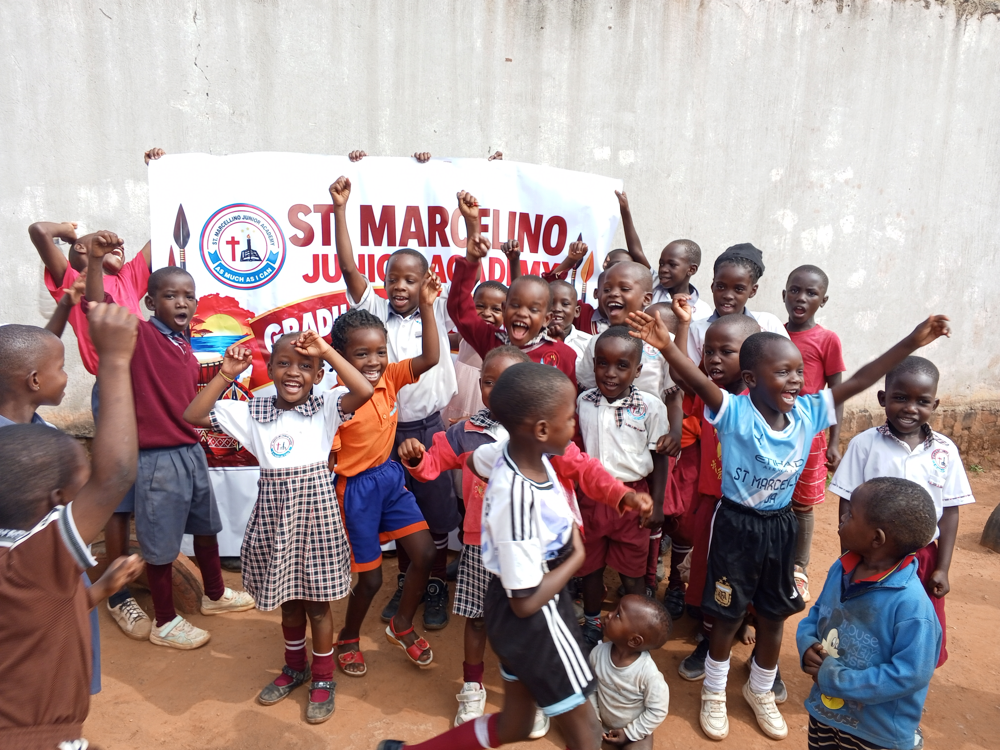
Have questions about the school?
We would be happy to help your family learn more.
Contact the school